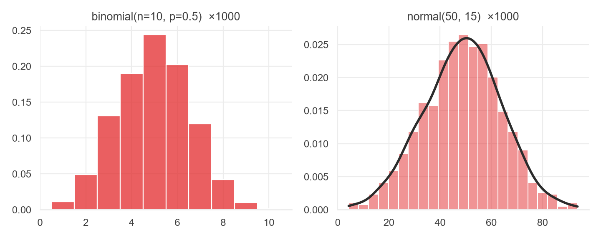
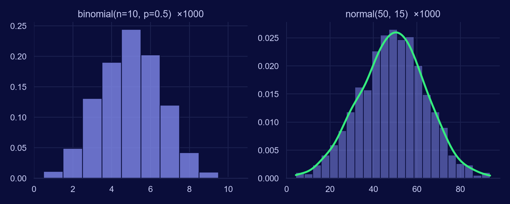

& Statistics
데이터분석 입문
확률과 통계 · 분포와 추정
- 01확률변수와 확률분포결과 → 숫자 · 분포표
- 02이항분포 · 큰수의 법칙갈톤 보드 · 상대도수 수렴
- 03정규분포 · 표준화N(m, σ²) · Z 점수
- 04표본평균 · 신뢰구간표본 하나 → 모평균 추정
- 05Python 실습seaborn 분포 시각화
1동전 100번 → 앞면 정확히 50번, 확률은?
21,000명 설문 → 전체 의견 추정, 근거는?
목표 1
- 확률변수 · 확률분포 개념 이해
- 이항분포 · 정규분포의 모양과 평균 · 표준편차 해석
목표 2
- 표본평균의 분포 · 신뢰구간 해석
- Python(seaborn) 분포 시각화
- 최종 결과물: 분포 시각화 노트북 1개
확률변수 = 시행 결과 → 숫자 대응 규칙
| $X$ | 0 | 1 | 2 | 합계 |
|---|---|---|---|---|
| $P(X=x)$ | $\frac14$ | $\frac24$ | $\frac14$ | 1 |
핵심데이터 표의 열 하나 = 확률변수 하나 · 열 값의 분포 = 확률분포R01 p.81–82
갈톤 보드 = 이항분포 B(n, p) 실험 장치
- 못 1개 = 시행 1회 · 오른쪽 = 성공 (확률 p)
- 칸 번호 k = 성공 횟수 X · 못 n = 10줄
핵심$E(X)=np$ · $V(X)=npq$R01 p.93–95
시행 횟수 ↑ → 상대도수 X/n → 수학적 확률 p
$P(|X/n-1/6|<0.1)$ 교과서 계산값
핵심데이터 많을수록 비율 추정 안정 · 데이터분석의 출발점R01 p.97–98
n ↑ → 이항분포 B(n, p) ≈ 정규분포 N(np, npq)
- 막대 = B(n, 1/2) 확률 · 가로축 표준화
- n = 1 → 64 · 막대 윤곽 → 종 모양
- n 충분히 큼 → 정규분포로 근사 계산
제작: manim (Python 수학 애니메이션)
핵심복잡한 이항 확률 계산 → 표준정규분포표 하나로 처리R01 p.105–107
N(m, σ²) = 평균 m → 위치 · 표준편차 σ → 퍼짐
- m 변화 → 곡선 좌우 이동
- σ ↑ → 낮고 넓게 · σ ↓ → 높고 좁게
- 곡선 아래 넓이 = 1 · x = m 대칭
- 점선 = 표준정규분포 N(0, 1)
핵심키 · 측정 오차 · 제품 수명 → 정규분포 근사R01 p.99–100
표준화 = 곡선 그대로 · 눈금만 교체
예제: $X\sim N(50,\,15^2)$ · $P(35\le X\le 80)$
$=P(-1\le Z\le 2)=0.3413+0.4772$
핵심단위 다른 두 데이터 비교 → Z 점수R01 p.102–103
표본평균 X̄ ~ N(m, σ²/n) · 모집단 모양 무관
모집단: 평균 2 · 표준편차 √2 예시 분포
핵심n ↑ → x̄ 퍼짐 ↓ (σ/√n) · 치우친 데이터도 평균은 종 모양R01 p.119–123
신뢰도 95% = 같은 방법 100번 → 약 95개 구간이 m 포함
예시: σ = 20 g · n = 25 → x̄ ± 7.84 · 점선 m = 250
- m = 고정값 · 구간 = 표본마다 변동
주의"m이 이 구간에 있을 확률 95%" ✕ → 방법의 성공률 95% ○R01 p.127–128
seaborn = 분포 시각화 한 줄
import numpy as np import seaborn as sns rng = np.random.default_rng(42) x = rng.binomial(n=10, p=0.5, size=1000) # 갈톤 보드 공 1,000개 z = rng.normal(loc=50, scale=15, size=1000) # N(50, 15²) 1,000개 sns.histplot(x, discrete=True, stat="probability") sns.histplot(z, kde=True, stat="density")


핵심시뮬레이션 1,000번 = 갈톤 보드 공 1,000개 · 코드 몇 줄로 재현
연습 단계 1 · 15분 — 분포 직접 그리기
- Google Colab 새 노트북 열기
colab.research.google.com - 5-1 코드 붙여넣기 → 실행
Shift + Enter - p = 0.5 → 0.2 변경 → 막대 모양 비교
x = rng.binomial(n=10, p=0.2, size=1000) - n = 10 → 100 변경 → 종 모양 확인
x = rng.binomial(n=100, p=0.5, size=1000)
정리
분포 = 값 · 확률 대응표
확률변수 = 결과 → 숫자 · 이항 B(n, p) · 정규 N(m, σ²) · 표준화 Z
추정 = 표본평균 ± 오차
X̄ ~ N(m, σ²/n) · 95% 신뢰구간 x̄ ± 1.96σ/√n
분포 시각화 노트북
seaborn histplot · p · n 변경 비교 캡처